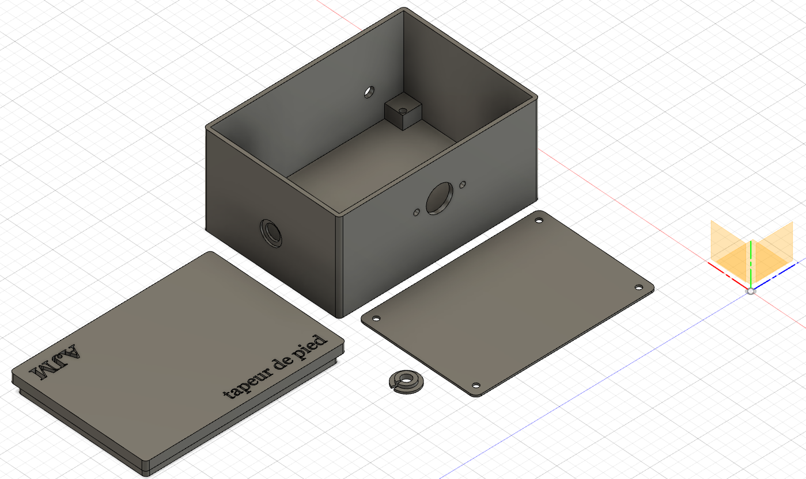
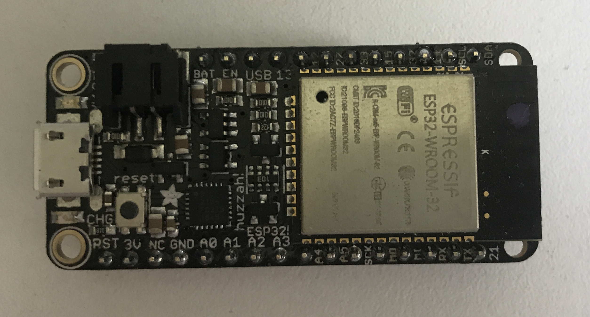
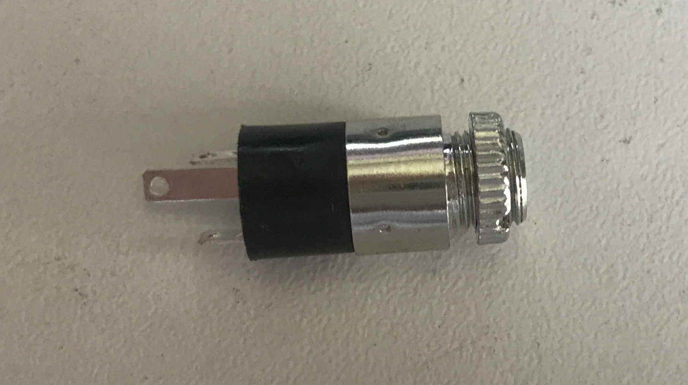
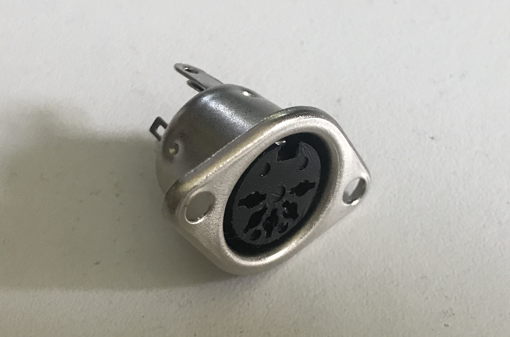

Final Project
Original Project Ideas
At the beginning of the semester, I had a few ideas for a final concluding project.
My first idea was to build an immersive audio and video capture dummy head with microphone elements in a binaural pair in realistic ears, and stereoscopic widefield eyesite in order to attempt to satisfyingly capture and record live audience-participatory theater, specifically original performance Shakespeare.
My second thought was to try to create a shirt that could sense prop sword hits and respond by playing back annimations of blood on some sort of fabric screen.
My third idea was to build shoes with midi triggers in the toe and heel which could control an analog or digital drum machine while allowing the user to simultaneouly play another instrument.
It is this final idea which has propelled me through this semester.
The Sensor
In order to detect the contact of shoe with floor, I thought about a series of different sensors, from handmade pressure sensors to accelerometers to vibrator sensors. I have now settled on velostat, a rubber-like cloth material which changes its capacitance with the application of pressure. I'm particularly attracted to velostat because it is extrordinarily thin compared to an accelerometer, and reliable compared to a piezo crystal.
Connectivity
In order to make the shoes as flexible as possible, I wanted to make them connect to both my laptop as a MIDI device and to output a 5 pin MIDI signal which could be plugged in to most hardware drum machines. My main concerns when deciding how to connect the shoe-housed velostat sensors to that drum hardware was the form factor within the shoes, trying to keep hardware as minimal as possible, and trying to keep latency similarly as low as possible.
Housing
I decided to use the Adafruit Feather ESP32 to convert the analog signal from the velostat sensors in the shoes into digital MIDI signals because of its diverse connectivity options. It's a relativly large controller, so mounting it within the shoes was not a good option. I wanted to keep the weight and size down in each shoe as much as possible. I decided to build a small housing for the controller and the output devices. Since for this first version, I intend to play while sitting down and playing other instruments, I imagined that the housing could sit under my chair, connected to the shoes be reinforced stereo 1/8th inch cables.
Since I don't have a 3D printer at home, and the housing isn't essential for prototyping the project, I've ended up using a small wooden box for the housing, but I've included here an image from my Fusion 360 model of a potential future housing

The housing includes an elevated mount for the solderable breadboard I am using to mount my controller as well as holes for the 1/8th inch cable sockets, 5 pin midi out, and a small cable socket I designed for a removeable USB cable. The small circle will lock the USB cable in by being closed and slipped into the matching port on the side of the box.
The lid contains my initials and "tapeur de pied," a Quebicois name for, literally, a "tapper of the feet," or all musicians who use their feet as percussion, often while fiddling. The STL file can be downloaded or modified on Thingiverse.
Components
Here is a list of the components I used to assemble my shoes.
Adafruit Feather ESP 32
Solderable Breadboard

3.5mm Stereo Panel Jacks
3.5mm Stereo Auxillary Cables

Velostat Sheet

5 Pin MIDI Panel Socket
As well as adhesive copper tape, solidcore wire, and a lot of solder.